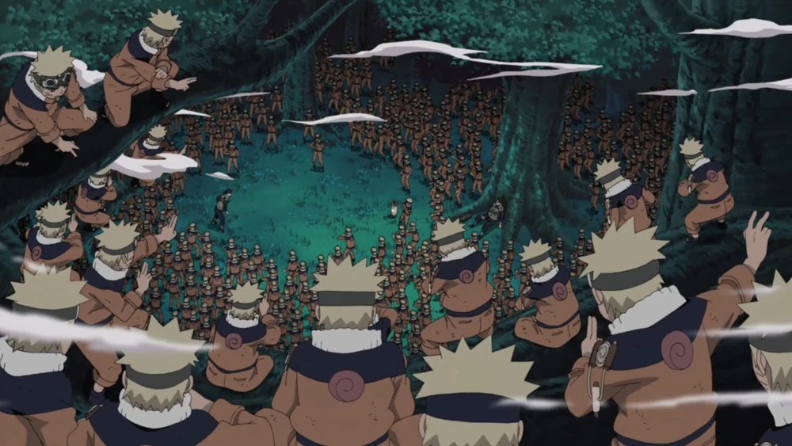
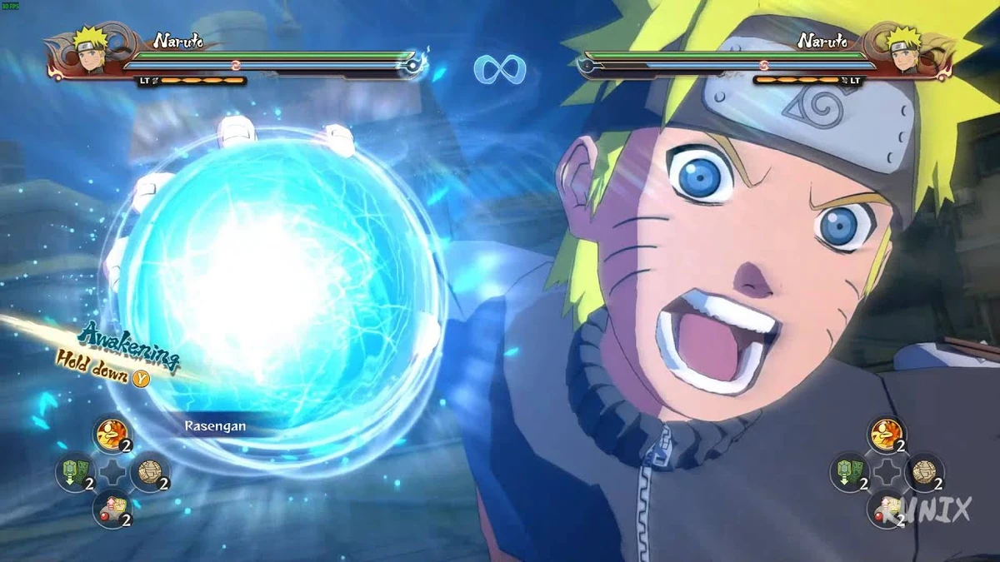
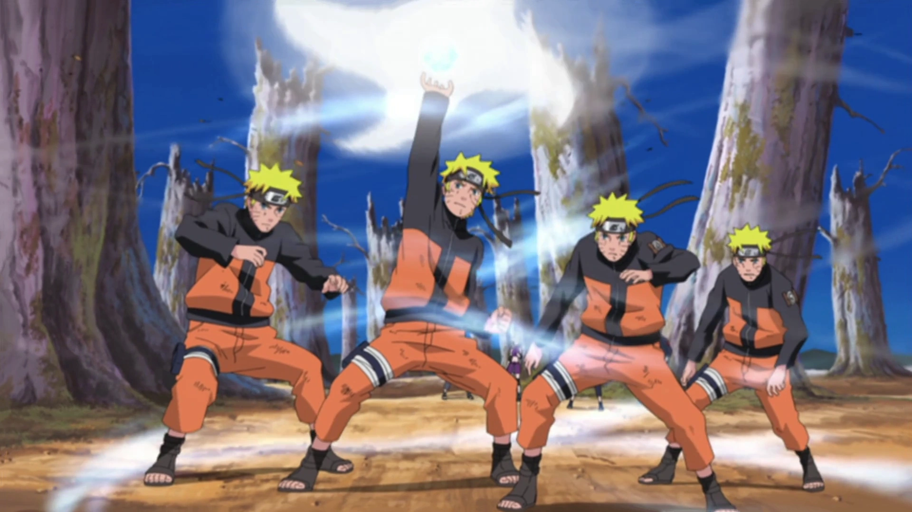
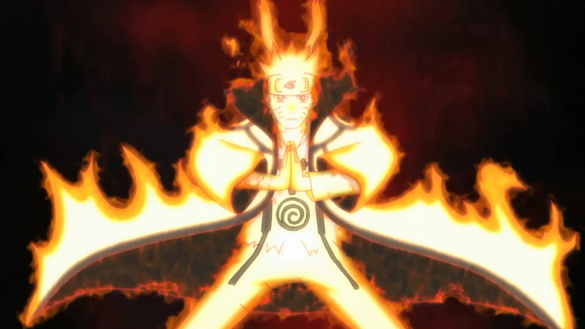
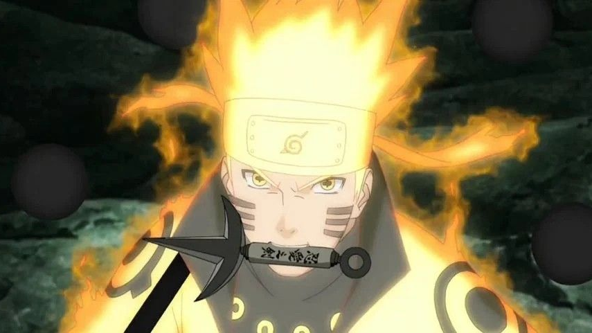

Naruto Uzumaki (うずまきナルト, Uzumaki Naruto) is a shinobi of Konohagakure's Uzumaki clan and a reincarnation of Asura Ōtsutsuki. He became the jinchūriki of the Nine-Tails on the day of his birth — a fate that caused him to be shunned by most of Konoha throughout his childhood. After joining Team Kakashi, Naruto worked hard to gain the village's acknowledgement all the while chasing his dream to become Hokage. In the following years, through many hardships and ordeals, he became a capable ninja, regarded as a hero both by the villagers, and soon after, the rest of the world, becoming known as the Hero of the Hidden Leaf (木ノ葉隠れの英雄, Konohagakure no Eiyū, literally meaning: Hero of the Hidden Tree Leaves). He soon proved to be one of the main factors in winning the Fourth Shinobi World War, leading him to achieve his dream and become the village's Seventh Hokage (七代目火影, Nanadaime Hokage, literally meaning: Seventh Fire Shadow).
1. Kage Bunshin no Jutsu

Naruto's first trademark technique was the Shadow Clone Technique. While originally failing constantly with a basic illusionary clone, after briefly studying the Scroll of Seals, he learned to create shadow clones on a mass scale. From then on, Naruto's skill with shadow clones blossomed to great heights. Having unusually high chakra reserves, Naruto could use this technique to create hundreds of shadow clones and retain large amounts of chakra in each one with relative ease.
2. Rasengan

Naruto's second trademark technique is the Rasengan. Originally, due to his poor chakra control, Naruto had to use a shadow clone to form the spherical shape while he provided the chakra. Over time, Naruto developed larger versions of the Rasengan and learned how to perform it faster. During the Fourth Shinobi World War, he learned to use the Rasengan and its variants unaided with a single hand, or even form one in both hands simultaneously. He also increased the size of his standard Rasengan.
3. Fuuton: Rasenshuriken

The Wind Release: Rasenshuriken is a shuriken-shaped variant of the Rasengan. It is the completed version of the Wind Release: Rasengan, with four large points around the central Rasengan core, giving the appearance of a fūma shuriken. It also gives off a loud screeching noise. The Rasenshuriken requires a great deal of chakra to perform.
4. Sage Mode

Naruto later trained in senjutsu at Mount Myōboku, which was only possible due to his high chakra reserves. Unlike Jiraiya, he was able to perfectly balance natural energy with his chakra, and enter a complete Sage Mode, symbolised by the orange pigmentation around his yellow eyes, his toad-like pupils, and no other alterations to his appearance. Using Sage Mode made Naruto's techniques stronger, enhanced his physical parameters, utilise the Frog Kata taijutsu style, and sense chakra through advanced enough to identify different signatures from vast distances.
5. Kurama Mode

Kurama Mode is a powerful form where Naruto merges with the full power of the Nine-Tailed Fox, Kurama, resulting in a state of complete cooperation and shared chakra. In this mode, Naruto's physical abilities, chakra, and senses are dramatically amplified, and he can manifest parts of Kurama's body and even fire Tailed Beast Balls. This mode is the culmination of a strong bond between Naruto and Kurama, where they have learned to fully trust and work with each other, allowing Naruto to access the fox's immense power without being overwhelmed by his negative will.
6. Six Paths Sage Mode

Naruto also gained access to the Six Paths Senjutsu (六道仙術, Rikudō Senjutsu), which allows him to fly and also manifest up to nine Truth-Seeking Balls, composed of all five basic natures, use Yin–Yang Release, and imbue them with the Six Paths Chakra. With the power given to him by Hagoromo Ōtsutsuki, Naruto gained access to the Six Paths Sage Mode (六道仙人モード, Rikudō Sennin Mōdo). In this mode, his pupils take on a cross-like shape — without manifesting the orange pigmentation around his eyes present in Sage Mode. Going further, Naruto donned a new Nine-Tails Chakra Mode cloak, which he could access instantly and maintain much longer than his standard Sage Mode. Naruto's physical attributes and techniques are further augmented, to the point where he could dodge attacks that moved at the speed of light and deflect Truth-Seeking Balls. It also empowers his sensory abilities to the highest possible level, which allowed him to sense the invisible shadows of Limbo.
For more information about Naruto Uzumaki:
Click Here